AURYN — approved midnight direction
The app images below are actual Chromium screenshots of the source build. Authentication, prices, chart histories and signals are explicit preview fixtures. The overview uses dated captured Microsoft financial evidence; none of these screenshots establishes a current investment recommendation or live integration. No image edits or generated substitutes were used for application captures.
The concept defines the visual direction, not live values or pixel exports for every state. Actual company names, timestamps, controls and unavailable evidence require responsive differences. Physical iPhone/Safari acceptance remains outstanding.
Verification · Capabilities and limits
Approved concept · illustrative data
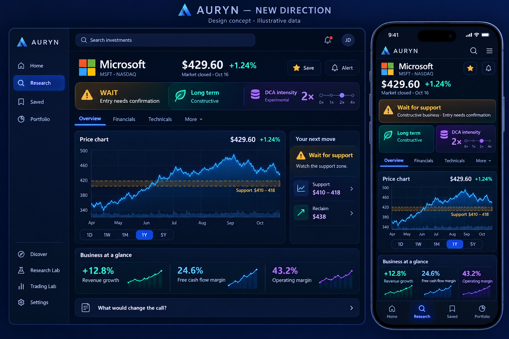
Actual desktop · dark
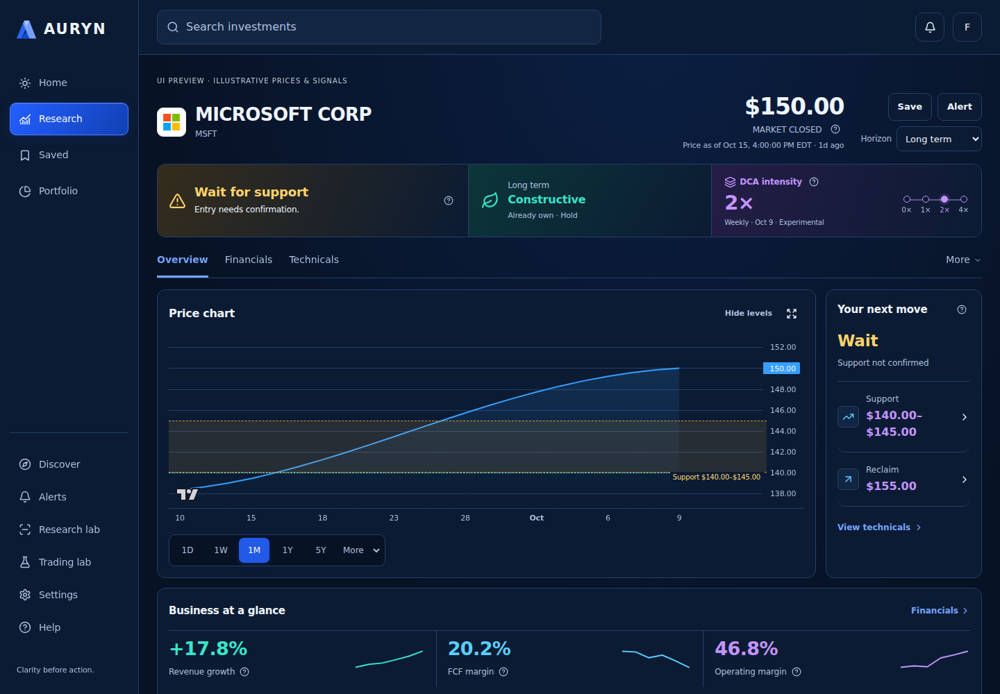
Actual desktop · light
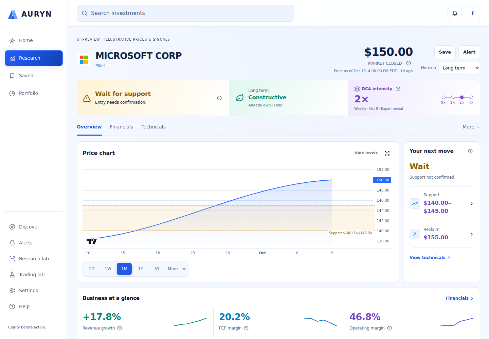
Actual mobile · dark
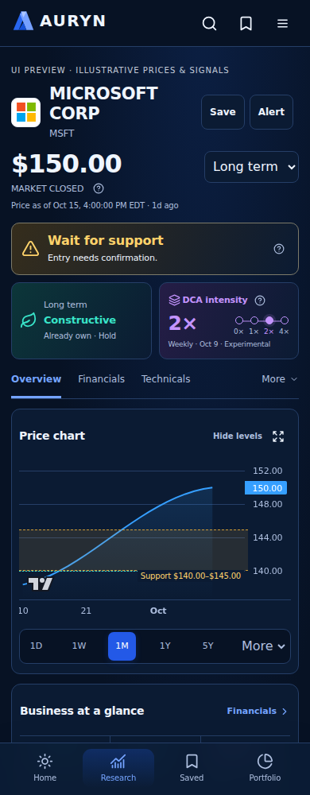
Actual mobile · light
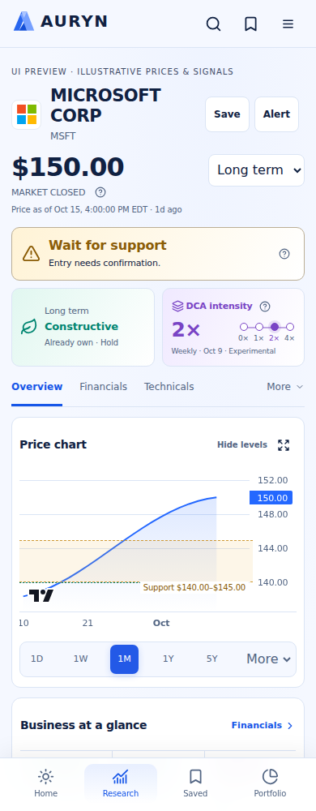
Actual Financials · desktop
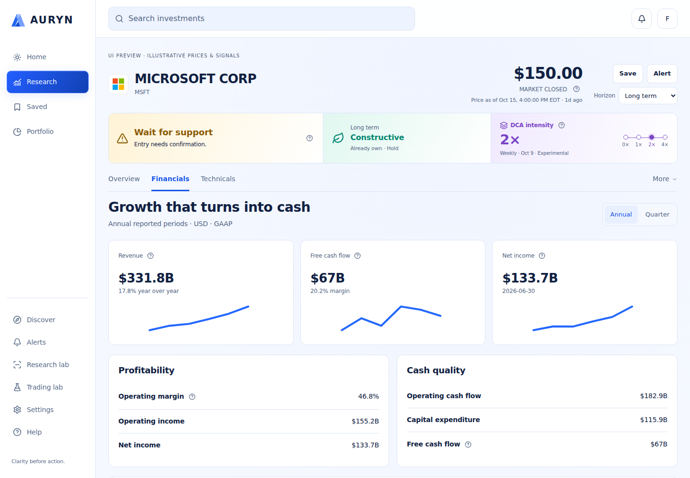
Actual app · dark-1440-dashboard
Synthetic QA fixtures demonstrate layout, including unavailable evidence.
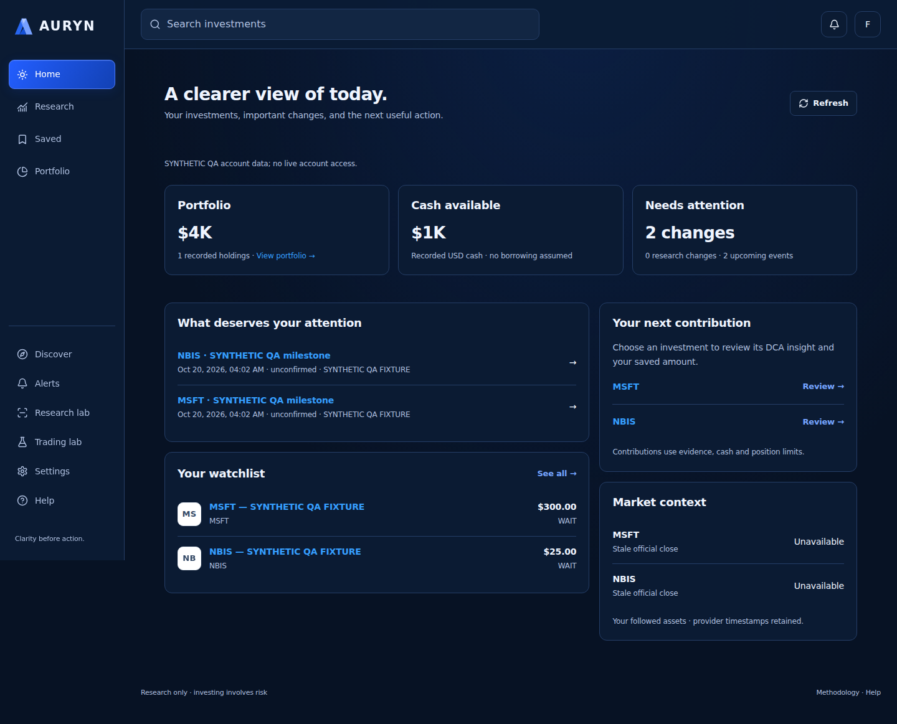
Actual app · light-390-dashboard
Synthetic QA fixtures demonstrate layout, including unavailable evidence.
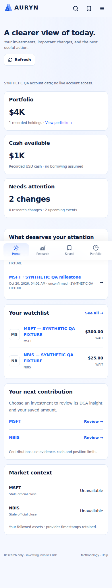
Actual app · dark-1440-portfolio
Synthetic QA fixtures demonstrate layout, including unavailable evidence.
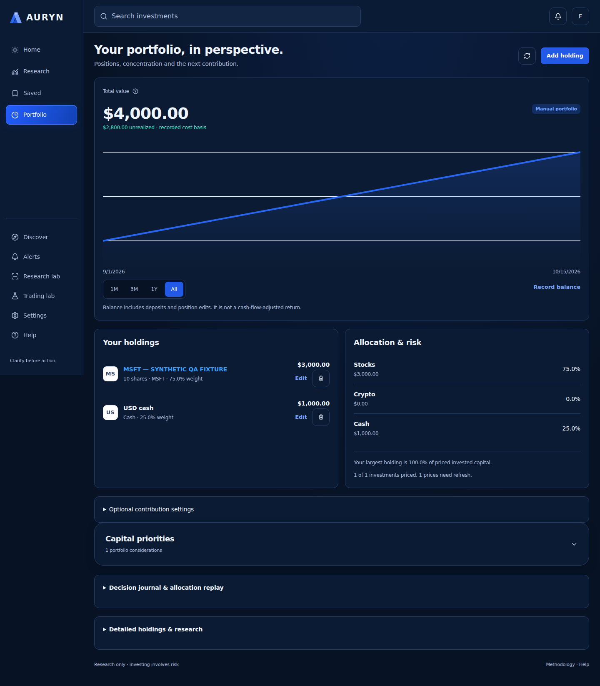
Actual app · light-390-portfolio
Synthetic QA fixtures demonstrate layout, including unavailable evidence.
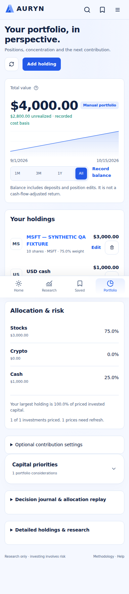
Actual app · dark-1440-MSFT-Technicals
Synthetic QA fixtures demonstrate layout, including unavailable evidence.
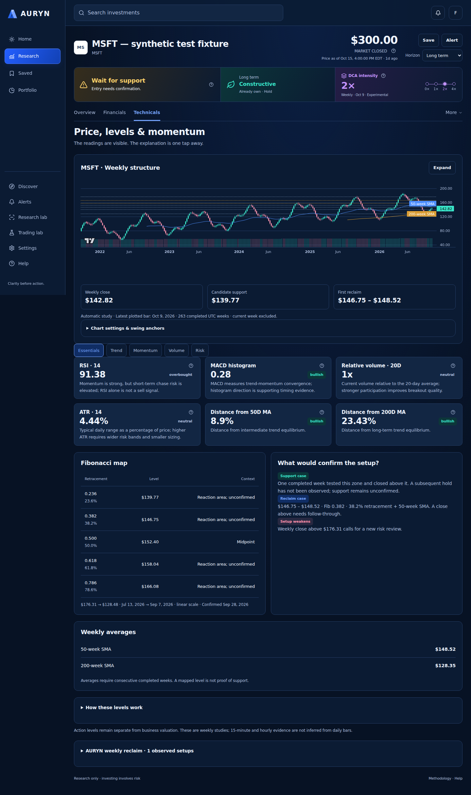
Actual app · light-390-MSFT-Financials
Synthetic QA fixtures demonstrate layout, including unavailable evidence.
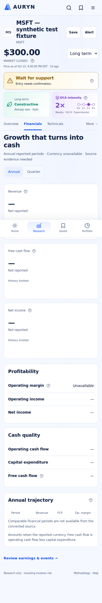
Actual app · dark-390-MSFT-Valuation
Synthetic QA fixtures demonstrate layout, including unavailable evidence.
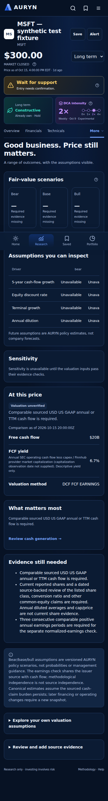